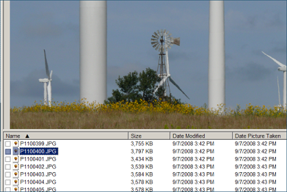

The File Details view shows the file names, sizes, and dates of the photos, and only displays the
currently selected photo. You can click on the headings to sort the files by name, size, or date.

Details View
In Thumbnail view you can select multiple files with the mouse, and by holding down the shift or
control key while you select additional photos.
In Details view, instead of selecting multiple files, you "tag" them, or put a check mark in the
check box to the left of the file name. In the Details view, you can tag photos from more than one
folder (provided that option is enabled).
You can select the view style under the View menu or tool bar.